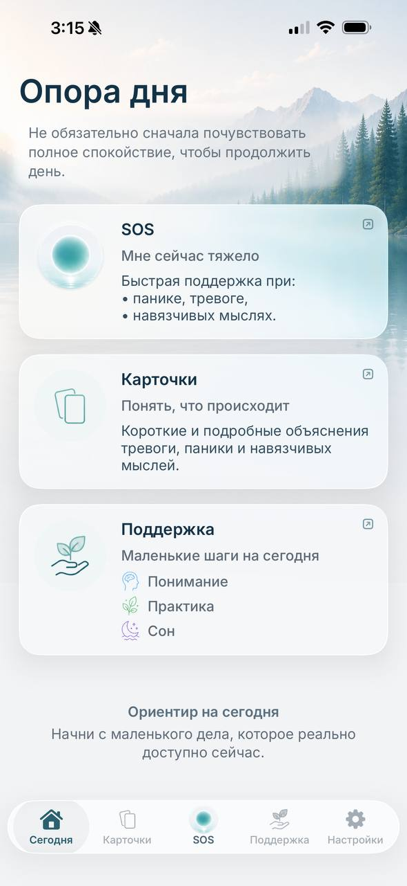

Паника и телесные ощущения
Панические атаки: почему они кажутся опасными и почему цикл возвращается
Паническая атака может начаться с одного ощущения: сердце ударило сильнее, стало трудно вдохнуть, закружилась голова или появилось чувство нереальности.
Через несколько секунд тревога уже предлагает объяснение:
«У меня инфаркт».
«Я потеряю сознание».
«Я перестану себя контролировать».
Ощущение реально. Но вывод, который делает тревога, — ещё не доказанный факт.
Чтобы понять паническую атаку, важно увидеть не только симптомы, но и весь цикл: что человек почувствовал, какое значение придал ощущению, что сделал дальше и чему после этого научилась его система тревоги.
Короткий ответ
Паническая атака — внезапная волна сильного страха или дискомфорта. Она может сопровождаться сердцебиением, одышкой, дрожью, головокружением, тошнотой, дискомфортом в груди, чувством нереальности и страхом потерять контроль.
Организм ведёт себя так, словно рядом находится серьёзная опасность, даже если очевидной внешней угрозы нет.
Цикл часто выглядит так:
- 01Телесное ощущение
- 02Опасное объяснение
- 03Усиление тревоги
- 04Проверки или избегание
- 05Краткое облегчение
- 06Ещё большая чувствительность к следующему ощущению
Человек не выдумывает симптомы. Ощущения могут быть очень сильными. Но значение, которое им мгновенно приписывает тревога, способно дополнительно усиливать реакцию организма.
Паническая атака и паническое расстройство — не одно и то же
Паническая атака описывает отдельный эпизод: внезапную волну страха и телесных ощущений.
Паническое расстройство — диагноз, который может поставить квалифицированный специалист. Обычно речь идёт о повторяющихся неожиданных атаках, длительном страхе перед следующей атакой и изменениях поведения: например, человек начинает избегать транспорта, магазинов, физических нагрузок или мест, откуда, как ему кажется, будет трудно выйти.
Не у каждого человека, пережившего паническую атаку, развивается паническое расстройство.
Похожие ощущения могут возникать по разным причинам. Новые, сильные, необычные или изменившиеся симптомы нельзя самостоятельно объявлять тревогой — их необходимо обсуждать с медицинским специалистом.
Что происходит с телом
Когда мозг обнаруживает возможную опасность, организм готовится действовать.
Сердце может биться быстрее. Дыхание меняется. Мышцы напрягаются. Внимание сужается и начинает искать угрозу. Может появиться дрожь, потливость, жар, слабость, головокружение, покалывание, тошнота или чувство отстранённости от происходящего.
Такая реакция имеет смысл при реальной угрозе. Но во время панической атаки сама реакция организма может восприниматься как новая опасность.
Сердцебиение становится «признаком инфаркта».
Головокружение — «доказательством скорого обморока».
Чувство нереальности — «признаком потери контроля».
Человек начинает бояться не только возможной опасности, но и самой реакции организма.
Почему страх усиливается
Тревога редко говорит:
«Я заметила ощущение, но пока не знаю, что оно означает».
Она сразу предлагает самый опасный вариант.
После этого внимание переключается внутрь. Человек начинает следить за сердцем, дыханием, устойчивостью ног, зрением или ощущением реальности.
Чем внимательнее он наблюдает за телом, тем больше замечает. Чем больше замечает, тем убедительнее кажется опасный вывод. Тревога усиливается — и вместе с ней могут усиливаться ощущения.
Один пример: «Сердце бьётся быстро — это инфаркт»
Человек замечает сердцебиение.
Возникает вывод:
«Со мной происходит что-то опасное».
Он начинает считать пульс, прекращает движение, прислушивается к груди, ищет симптомы или просит близкого подтвердить, что всё нормально.
Если проверка успокаивает, тревога временно снижается.
Но мозг может научиться не тому, что опасности не было, а другому:
«Я избежал опасности, потому что вовремя всё проверил».
В следующий раз потребность в проверке появляется ещё быстрее.
Похожий цикл может возникать вокруг мыслей:
- «Я потеряю сознание».
- «Мне не хватит воздуха».
- «Давление поднимется — будет инсульт».
- «Я потеряю контроль».
- «Если паника случилась здесь, она повторится снова».
В Ailin каждая такая мысль рассматривается отдельно — вместе с ощущениями, пугающим выводом и действиями, которые могут поддерживать цикл.
Проверки, поиск уверенности и избегание
Обратиться к врачу при новых или необычных симптомах — разумно. Следовать медицинским рекомендациям — важно.
Проблема может появиться, когда после необходимой медицинской оценки человек продолжает снова и снова проверять одно знакомое ощущение.
Например:
- многократно измеряет пульс или давление;
- постоянно наблюдает за дыханием;
- ищет симптомы в интернете;
- просит снова подтвердить, что всё нормально;
- немедленно покидает ситуацию при первых признаках тревоги;
- избегает места, где однажды произошла паническая атака.
Такие действия понятны: человек пытается защитить себя. Они могут быстро уменьшить страх — именно поэтому от них трудно отказаться.
Но если облегчение всегда приходит только после проверки или выхода из ситуации, мозг продолжает считать ощущение опасным.
Что можно постепенно делать иначе
Задача не в том, чтобы заставить себя ничего не чувствовать. И не в том, чтобы любой ценой доказать себе:
«Со мной точно всё нормально».
Более полезное направление — постепенно изменить ответ на знакомую тревожную волну.
01
Отделить ощущение от вывода
Ощущение:
«Я чувствую сердцебиение».
Вывод тревоги:
«Это обязательно закончится катастрофой».
Они могут появиться одновременно, но не являются одним и тем же.
02
Заметить, чего требует тревога
Она может требовать немедленно измерить пульс, найти ещё одно медицинское объяснение, выйти из помещения или попросить кого-то дать полную уверенность.
Полезный вопрос:
«Это действие действительно необходимо сейчас или оно нужно, чтобы на несколько минут уменьшить неопределённость?»
03
Выбрать одно небольшое действие вне привычного цикла
Если ситуация безопасна, симптомы знакомы и уже были оценены специалистом, таким действием может стать отказ от одной повторной проверки или возвращение к одному обычному занятию.
Это не обещает мгновенного облегчения. Смысл в том, чтобы постепенно перестать подтверждать тревоге, что каждое знакомое ощущение требует срочной защиты.
Когда восстановление превращается в новую проверку
Иногда человек много делает для своего состояния, но сам процесс превращается в новую проверку.
Например:
- пытается немедленно убрать каждое неприятное ощущение;
- постоянно спрашивает себя: «Мне уже стало лучше?»;
- откладывает обычную жизнь до момента полного спокойствия;
- считает возвращение тревоги доказательством, что весь прогресс потерян;
- меняет одну проверку на другую — например, перестаёт измерять пульс, но начинает постоянно оценивать дыхание.
Цель не в том, чтобы больше никогда не чувствовать тревогу. Более реалистичное изменение — постепенно перестать строить каждое действие вокруг необходимости немедленно от неё избавиться.
Один трудный день не обязательно означает возвращение в начало.
А как же дыхание?
Дыхание может быть полезной опорой, но оно не должно превращаться в новый экзамен:
«Я дышу правильно?»
«Почему ощущения ещё не прошли?»
Можно мягко вернуть внимание к более спокойному выдоху или голосовой практике. Но задача не в том, чтобы немедленно сделать дыхание идеальным. Задача — пройти через трудный момент без дополнительной борьбы и новых пугающих выводов.
Когда нужна профессиональная помощь
Обсуди состояние с врачом или специалистом в области психического здоровья, если:
- панические атаки повторяются;
- страх следующей атаки занимает много времени;
- ты начал избегать транспорта, магазинов, работы, учёбы, физических нагрузок или других обычных ситуаций;
- проверки и поиск уверенности трудно остановить;
- тревога заметно ограничивает повседневную жизнь;
- ты не уверен, связаны ли симптомы с паникой или с физическим состоянием.
Для панического расстройства существуют изученные методы помощи, включая когнитивно-поведенческую терапию. В некоторых случаях специалист может также обсудить медикаментозное лечение.
При новых, тяжёлых, необычных или быстро ухудшающихся симптомах необходимо обратиться за медицинской помощью.
Если тебе или другому человеку может угрожать непосредственная опасность, обратись в местную экстренную службу. В США можно позвонить 911; при эмоциональном кризисе или риске самоповреждения — позвонить или написать 988.
Понять цикл — только начало
В спокойный момент схема может казаться понятной.
Гораздо труднее узнать её, когда сердце уже бьётся быстрее, дыхание изменилось и тревога требует немедленно что-то проверить.
Ailin помогает начать с конкретной мысли:
«Что именно сейчас пугает меня больше всего?»
Карточки и материалы «Понимание» связывают мысль, телесное ощущение, опасный вывод и последующую реакцию.
Когда читать трудно, можно включить SOS-аудио или одну из коротких голосовых практик. В приложении также есть поддержка для сна и ночной тревоги.
Ailin не ставит диагноз, не определяет причину симптомов и не заменяет врача, психотерапию или экстренную помощь. Это самостоятельный образовательный инструмент для понимания знакомых тревожных паттернов.
Ailin для iPhone
Начни с мысли, которая возвращается сейчас

Почему я создал Ailin
Ailin появился из личного опыта панических атак, телесных страхов и постоянных проверок.
Мне не хватало спокойного объяснения всей картины: ощущения, пугающего вывода, проверки, краткого облегчения и возвращения страха.
Поэтому Ailin начинается не с общего совета «просто успокойся», а с конкретной мысли, которая действительно звучит в голове человека.
Частые вопросы
Может ли паническая атака ощущаться как инфаркт?
Да. Паническая атака может сопровождаться сердцебиением, одышкой, дискомфортом в груди, головокружением и сильным страхом. Эти ощущения могут быть похожи на симптомы физических состояний.
Поэтому новые, тяжёлые, необычные или изменившиеся симптомы нельзя автоматически списывать на тревогу — необходимую оценку должен проводить медицинский специалист.
Значит ли одна паническая атака, что у меня паническое расстройство?
Нет. Не у каждого человека, пережившего паническую атаку, развивается паническое расстройство. Диагноз зависит от повторяемости атак, страха перед их возвращением, изменений поведения и других факторов.
Сколько обычно длится паническая атака?
Паническая волна часто достигает высокой интенсивности быстро. NHS указывает, что атака обычно длится от 5 до 20 минут, хотя отдельные эпизоды могут продолжаться дольше. Напряжение, усталость или настороженность могут сохраняться и после самой сильной части.
Почему страх возвращается после нормальных анализов?
Медицинская проверка может быть необходимой. Но если после неё человек продолжает снова и снова проверять знакомое ощущение, облегчение остаётся кратким.
Тревога начинает требовать нового подтверждения при каждом изменении в теле. Тогда цикл поддерживает уже не только первоначальное ощущение, но и постоянная необходимость получить полную уверенность.
Могут ли лекарства помочь при паническом расстройстве?
Да. В зависимости от ситуации специалист может предложить психотерапию, лекарственную помощь или их сочетание.
Некоторые препараты называются антидепрессантами, но применяются также при паническом расстройстве. Подбор лекарства, оценка возможных побочных эффектов и изменение схемы должны обсуждаться с врачом.
Не начинай, не прекращай и не изменяй назначенное лечение на основании информации из приложения или этой статьи. Ailin не даёт рекомендаций по лекарствам и не заменяет медицинскую помощь.
Понимание начинается с вопросов:
Что я сейчас чувствую?
Что тревога говорит об этом ощущении?
Что она заставляет меня делать?
Помогает ли это действие надолго — или возвращает меня в тот же цикл?
Найди мысль, которая не даёт тебе покоя
Выбери знакомую ситуацию, посмотри, что поддерживает цикл, и начни с одного понятного шага.
Ailin помогает начать с одной конкретной мысли.
Источники
Материал подготовлен Ailin Labs на основе личного опыта создателя и открытых материалов:
- National Institute of Mental Health — Panic Disorder: What You Need to Know;
- National Health Service — Panic Disorder и Get Help with Anxiety, Fear or Panic;
- National Institute for Health and Care Excellence — Generalised Anxiety Disorder and Panic Disorder in Adults: Management (CG113);
- MedlinePlus — Panic Disorder;
- Centre for Clinical Interventions — When Panic Attacks;
- научные обзоры когнитивной модели паники и катастрофической интерпретации телесных ощущений.
Материал носит образовательный характер и не является медицинской консультацией, диагнозом или лечением.